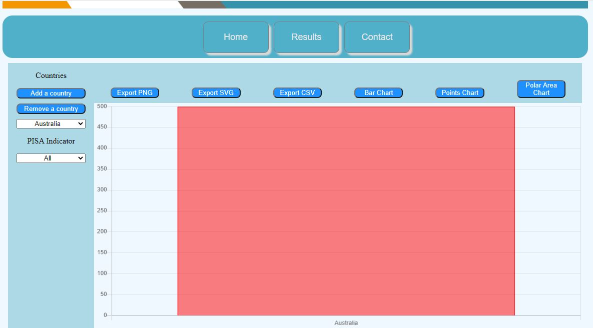
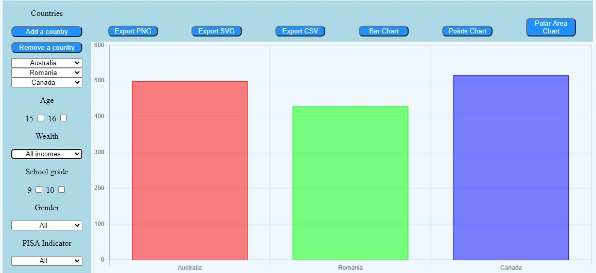
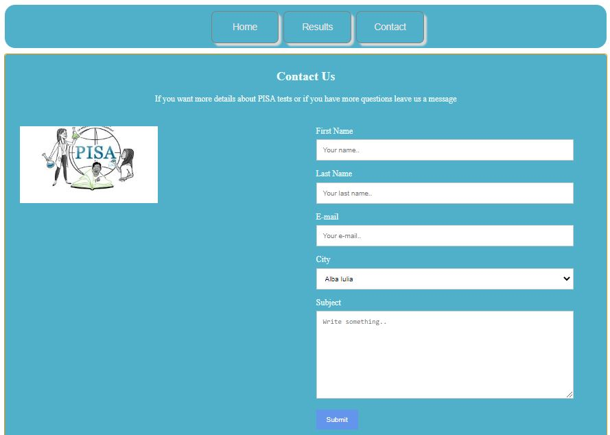
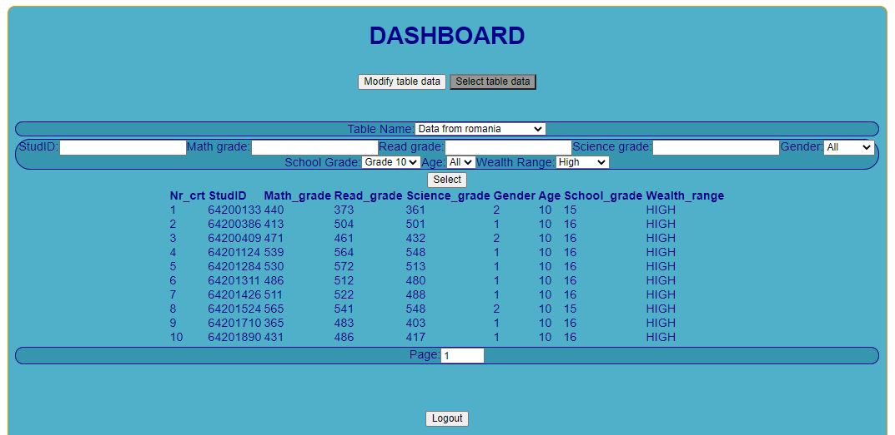

PiRo (Pisa 2018 Romanian Results Visualizer): Ghid de utilizare
Autori
-
Denis Claudiu Aenasoaei
-
Corina Elena Bogos(cas.Iftinca)
-
Ionut Gabriel Manolache
Pagina de pornire:
Este o pagina statica, ce contine informatii generale despre PISA, misiunea PISA, rezultatele testelor, etc.
Folosita pentru a afla mai multe informatii despre ceea ce face aceasta organizatie
Pagina cu rezultate:
Aici se regaseste scopul principal al aplicatiei: oferirea de vizualizari pentru datele prezente despre tarile care au dat testul PISA

Putem folosi butonul de adaugare a unei tari pentru a avea mai multe intrari in grafiul nostru
Vom putea aplica filtre pentru datele prezentate doar daca printre tari se afla Romania, fiind singura tara pentru care se cunosc date mai amanuntite

Se pot folosi butoanele din partea superioara a graficului pentru a exporta datele sau pentru a schimba tipul de chart prezentat
Pagina de contact:

Ofera posibiltatea utilizatorului sa contacteze un reprezentant PISA pentru a cere informatii sau a face reclamatii, prin completarea unui form
Pagina de administrare:
Necesita logare pentru a putea fi accesat.
Aici se pot face operatii direct cu informatiile din baza de date, cum ar fi inserarea, stergerea si modificarea datelor:

Se pot utiliza filtre pentru selectarea informatiilor:
